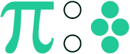

PiFourth.com
π:4 is a journey in the area of data science. Look at it as a notebook where a student continually collects learning material and keeps the best ones as reference. π:4 is basically one fourth of π radian or 45°. In material science, mechanical engineering, mathmatics and physics, 45° has its own meaning. In this website, π:4 is used as a multidisciplinary symbol.
About Me